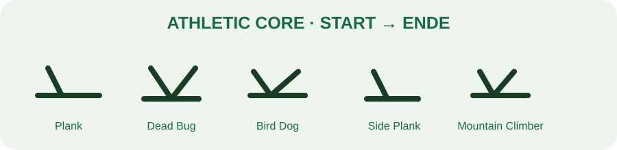

← TrainingsbibliothekAthletic Core
15–20 Minuten · 2–3 Runden · sportlich

1. Plank Variation
30–60 Sek. · Pause 20 Sek.
2. Dead Bug
8–12 je Seite · Pause 20 Sek.
3. Bird Dog
8–12 je Seite · Pause 20 Sek.
START: Vierfüßlerstand. ENDE: gegenüberliegenden Arm und Bein strecken.
4. Side Plank
30–45 Sek. je Seite · Pause 20 Sek.
5. Mountain Climber kontrolliert
30–45 Sek. · Pause 20 Sek.
2–3 Runden · Qualität vor Geschwindigkeit.